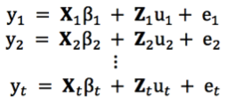
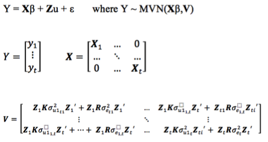
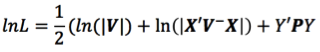
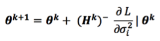

Solving Mixed Model Equations in R
sommer-package.RdSommer is a structural multivariate-univariate linear mixed model solver for multiple random effects allowing the specification and/or estimation of variance covariance structures. REML estimates can be obtained using two major methods
Direct-Inversion (Newton-Raphson and Average Information) >> mmer function
Henderson's mixed model equations (Average Information) >> mmec function
The algorithms are coded in C++ using the Armadillo library to optimize dense matrix operations common in genomic models. Sommer was designed to include complex covariance structures, e.g., unstructured, reduced-rank, diagonal. And also to model relationships between levels of a random effect, e.g., additive, dominance and epistatic relationship structures.
The mmer function can deal well with small and medium-size data sets (< 10,000 observations/records for average computers given the computational burden carried by the direct-inversion algorithms) since it works in the c > r problem and inverts an r x r matrix (being r the number of records and c the number of coefficients). On the other hand, the mmec function can deal with greater number of records (r>250K) as long as the number of coefficients to estimate is < 10,000 coefficients (c) since it works in the r > c problem and inverts a c x c matrix (being c the number of coefficients). The predict.mmer and predict.mmec functions can be used to obtain adjusted means. This package returns variance-covariance components, BLUPs, BLUEs, residuals, fitted values, variances-covariances for fixed and random effects, etc.
Functions for genetic analysis
The package provides kernels to estimate additive (A.mat), dominance (D.mat), epistatic (E.mat), single-step (H.mat) relationship matrices for diploid and polyploid organisms. It also provides flexibility to fit other genetic models such as full and half diallel models and random regression models.
A good converter from letter code to numeric format is implemented in the function atcg1234, which supports higher ploidy levels than diploid. Additional functions for genetic analysis have been included such as build a genotypic hybrid marker matrix (build.HMM), plot of genetic maps (map.plot), creation of manhattan plots (manhattan). If you need to use pedigree you need to convert your pedigree into a relationship matrix (use the `getA` function from the pedigreemm package).
Functions for statistical analysis and S3 methods
The vpredict function can be used to estimate standard errors for linear combinations of variance components (e.g. ratios like h2). The r2 function calculates reliability. S3 methods are available for some parameter extraction such as:
+ residuals.mmer, residuals.mmec,
+ anova.mmer, anova.mmec,
Functions for trial analysis
Recently, spatial modeling has been added added to sommer using the two-dimensional spline (spl2Da and spl2Db for mmer and spl2Dc for mmec ) functions.
Keeping sommer updated
The sommer package is updated on CRAN every 4-months due to CRAN policies but you can find the latest source at https://github.com/covaruber/sommer. This can be easily installed typing the following in the R console:
library(devtools)
install_github("covaruber/sommer")
This is recommended if you reported a bug, was fixed and was immediately pushed to GitHub but not in CRAN until the next update.
Tutorials
For tutorials on how to perform different analysis with sommer please look at the vignettes by typing in the terminal:
vignette("v1.sommer.quick.start")
vignette("v2.sommer.changes.and.faqs")
vignette("v3.sommer.qg")
vignette("v4.sommer.gxe")
or visit https://covaruber.github.io
Getting started
The package has been equiped with several datasets to learn how to use the sommer package (and almost to learn all sort of quantitative genetic analysis):
* DT_halfdiallel, DT_fulldiallel and DT_mohring datasets have examples to fit half and full diallel designs.
* DT_h2 to calculate heritability
* DT_cornhybrids and DT_technow datasets to perform genomic prediction in hybrid single crosses
* DT_wheat dataset to do genomic prediction in single crosses in species displaying only additive effects.
* DT_cpdata dataset to fit genomic prediction models within a biparental population coming from 2 highly heterozygous parents including additive, dominance and epistatic effects.
* DT_polyploid to fit genomic prediction and GWAS analysis in polyploids.
* DT_gryphon data contains an example of an animal model including pedigree information.
* DT_btdata dataset contains an animal (birds) model.
* DT_legendre simulated dataset for random regression model.
* DT_sleepstudy dataset to know how to translate lme4 models to sommer models.
Differences of sommer >= 4.1.7 with previous versions
Since version 4.1.7 I have introduced the mme-based average information function `mmec` which is much faster when dealing with the r > c problem (more records than coefficients to estimate). This introduces its own covariance structure functons such as vsc(), usc(), dsc(), atc(), csc(). Please give it a try, although is in early phase of development.
Differences of sommer >= 3.7.0 with previous versions
Since version 3.7 I have completly redefined the specification of the variance-covariance structures to provide more flexibility to the user. This has particularly helped the residual covariance structures and the easier combination of custom random effects and overlay models. I think that although this will bring some uncomfortable situations at the beggining, in the long term this will help users to fit better models. In esence, I have abandoned the asreml formulation (not the structures available) given it's limitations to combine some of the sommer structures but all covariance structures can now be fitted using the `vsr` functions.
Differences of sommer >= 3.0.0 with previous versions
Since version 3.0 I have decided to focus in developing the multivariate solver and for doing this I have decided to remove the M argument (for GWAS analysis) from the mmer function and move it to it's own function GWAS.
Before the mmer solver had implemented the usr(trait), diag(trait), at(trait) asreml formulation for multivariate models that allow to specify the structure of the trait in multivariate models. Therefore the MVM argument was no longer needed. After version 3.7 now the multi-trait structures can be specified in the Gt and Gtc arguments of the vsr function.
The Average Information algorithm had been removed in the past from the package because of its instability to deal with very complex models without good initial values. Now after 3.7 I have brought it back after I noticed that starting with NR the first three iterations gives enough flexibility to the AI algorithm.
Keep in mind that sommer uses direct inversion (DI) algorithm which can be very slow for datasets with many observations (big 'n'). The package is focused in problems of the type p > n (more random effect(s) levels than observations) and models with dense covariance structures. For example, for experiment with dense covariance structures with low-replication (i.e. 2000 records from 1000 individuals replicated twice with a covariance structure of 1000x1000) sommer will be faster than MME-based software. Also for genomic problems with large number of random effect levels, i.e. 300 individuals (n) with 100,000 genetic markers (p). On the other hand, for highly replicated trials with small covariance structures or n > p (i.e. 2000 records from 200 individuals replicated 10 times with covariance structure of 200x200) asreml or other MME-based algorithms will be much faster and I recommend you to use that software.
Models Enabled
The core of the package are the mmer and mmec (formula-based) functions which solve the mixed model equations. The functions are an interface to call the `NR` Direct-Inversion Newton-Raphson, `AI` Direct-Inversion Average Information or the mme-based Average Information (Tunnicliffe 1989; Gilmour et al. 1995; Lee et al. 2016). Since version 2.0 sommer can handle multivariate models. Following Maier et al. (2015), the multivariate (and by extension the univariate) mixed model implemented has the form:

where y_i is a vector of trait phenotypes, \(\beta_i\) is a vector of fixed effects, u_i is a vector of random effects for individuals and e_i are residuals for trait i (i = 1,..., t). The random effects (u_1 ... u_i and e_i) are assumed to be normally distributed with mean zero. X and Z are incidence matrices for fixed and random effects respectively. The distribution of the multivariate response and the phenotypic variance covariance (V) are:

where K is the relationship or covariance matrix for the kth random effect (u=1,...,k), and R=I is an identity matrix for the residual term. The terms \(\sigma^2_{g_{i}}\) and \(\sigma^2_{\epsilon_{i}}\) denote the genetic (or any of the kth random terms) and residual variance of trait i, respectively and \(\sigma_{g_{_{ij}}}\) and \(\sigma_{\epsilon_{_{ij}}}\) the genetic (or any of the kth random terms) and residual covariance between traits i and j (i=1,...,t, and j=1,...,t). The algorithm implemented optimizes the log likelihood:

where || is the determinant of a matrix. And the REML estimates are updated using a Newton optimization algorithm of the form:

Where, theta is the vector of variance components for random effects and covariance components among traits, H^-1 is the inverse of the Hessian matrix of second derivatives for the kth cycle, dL/dsigma^2_i is the vector of first derivatives of the likelihood with respect to the variance-covariance components. The Eigen decomposition of the relationship matrix proposed by Lee and Van Der Werf (2016) was included in the Newton-Raphson algorithm to improve time efficiency. Additionally, the popular vpredict function to estimate standard errors for linear combinations of variance components (i.e. heritabilities and genetic correlations) was added to the package as well.
GWAS Models
The GWAS models in the sommer package are enabled by using the M argument in the functions GWAS, which is expected to be a numeric marker matrix. Markers are treated as fixed effects according to the model proposed by Yu et al. (2006) for diploids, and Rosyara et al. (2016) (for polyploids). The matrices X and M are both fixed effects, but they are separated by 2 different arguments to distinguish factors such as environmental and design factors for the argument "X" and markers with "M".
The genome-wide association analysis is based on the mixed model:
$$y = X \beta + Z g + M \tau + e$$
where \(\beta\) is a vector of fixed effects that can model both environmental factors and population structure. The variable \(g\) models the genetic background of each line as a random effect with \(Var[g] = K \sigma^2\). The variable \(\tau\) models the additive SNP effect as a fixed effect. The residual variance is \(Var[\varepsilon] = I \sigma_e^2\)
When principal components are included (P+K model), the loadings are determined from an eigenvalue decomposition of the K matrix and are used in the fixed effect part.
The argument "P3D" introduced by Zhang et al. (2010) can be used with the P3D argument. When P3D=FALSE, this function is equivalent to AI/NR with REML where the variance components are estimated for each SNP or marker tested (Kang et al. 2008). When P3D=TRUE, it is equivalent to NR (Kang et al. 2010) where the assumption is that variance components for all SNP/markers are the same and therefore the variance components are estimated only once (and markers are tested in a WLS framework being the the weight matrix (M) the inverse of the phenotypic variance matrix (V)). Therefore, P3D=TRUE option is faster but can underestimate significance compared to P3D=FALSE.
Multivariate GWAS are based in Covarrubias-Pazaran et al. (2018, In preparation), which adjusts betas for all response variables and then does the regular GWAS with such adjusted betas or marker effects.
For extra details about the methods please read the canonical papers listed in the References section.
Bug report and contact
If you have any questions or suggestions please post it in https://stackoverflow.com or https://stats.stackexchange.com
I'll be glad to help or answer any question. I have spent a valuable amount of time developing this package. Please cite this package in your publication. Type 'citation("sommer")' to know how to cite it.
References
Covarrubias-Pazaran G. 2016. Genome assisted prediction of quantitative traits using the R package sommer. PLoS ONE 11(6): doi:10.1371/journal.pone.0156744
Covarrubias-Pazaran G. 2018. Software update: Moving the R package sommer to multivariate mixed models for genome-assisted prediction. doi: https://doi.org/10.1101/354639
Bernardo Rex. 2010. Breeding for quantitative traits in plants. Second edition. Stemma Press. 390 pp.
Gilmour et al. 1995. Average Information REML: An efficient algorithm for variance parameter estimation in linear mixed models. Biometrics 51(4):1440-1450.
Henderson C.R. 1975. Best Linear Unbiased Estimation and Prediction under a Selection Model. Biometrics vol. 31(2):423-447.
Kang et al. 2008. Efficient control of population structure in model organism association mapping. Genetics 178:1709-1723.
Lee et al. 2015. MTG2: An efficient algorithm for multivariate linear mixed model analysis based on genomic information. Cold Spring Harbor. doi: http://dx.doi.org/10.1101/027201.
Maier et al. 2015. Joint analysis of psychiatric disorders increases accuracy of risk prediction for schizophrenia, bipolar disorder, and major depressive disorder. Am J Hum Genet; 96(2):283-294.
Searle. 1993. Applying the EM algorithm to calculating ML and REML estimates of variance components. Paper invited for the 1993 American Statistical Association Meeting, San Francisco.
Yu et al. 2006. A unified mixed-model method for association mapping that accounts for multiple levels of relatedness. Genetics 38:203-208.
Tunnicliffe W. 1989. On the use of marginal likelihood in time series model estimation. JRSS 51(1):15-27.
Examples
####=========================================####
#### For CRAN time limitations most lines in the
#### examples are silenced with one '#' mark,
#### remove them and run the examples
####=========================================####
####=========================================####
#### EXAMPLES
#### Different models with sommer
####=========================================####
data(DT_example)
# DT <- DT_example
# DT=DT[with(DT, order(Env)), ]
# head(DT)
#
# ####=========================================####
# #### Univariate homogeneous variance models ####
# ####=========================================####
#
# ## Compound simmetry (CS) model
# ans1 <- mmer(Yield~Env,
# random= ~ Name + Env:Name,
# rcov= ~ units,
# data=DT)
# summary(ans1)
#
# ans2 <- mmec(Yield~Env,
# random= ~ Name + Env:Name,
# rcov= ~ units,
# data=DT)
# summary(ans2)
#
# ####===========================================####
# #### Univariate heterogeneous variance models ####
# ####===========================================####
# ## Compound simmetry (CS) + Diagonal (DIAG) model
# ans3 <- mmer(Yield~Env,
# random= ~Name + vsr(dsr(Env),Name),
# rcov= ~ vsr(dsr(Env),units),
# data=DT)
# summary(ans3)
#
# ans4 <- mmec(Yield~Env,
# random= ~Name + vsc(dsc(Env),isc(Name)),
# rcov= ~ vsc(dsc(Env),isc(units)),
# data=DT)
# summary(ans4)